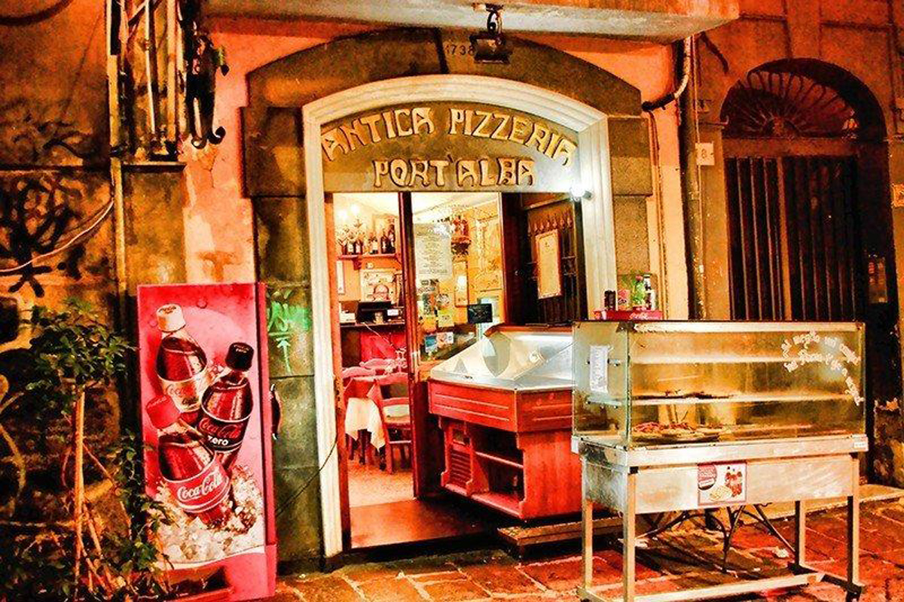

Si tienes restricciones alimentarias o te faltan ingredientes en la cocina, puedes usar estas alternativas:
En 2017, el arte de los pizzaioli (pizzeros) napolitanos fue declarado Patrimonio Cultural Inmaterial de la Humanidad por la UNESCO.
Se llama Antica Pizzeria Port'Alba, abrió en Nápoles en 1738 (primero como puesto callejero y en 1830 como restaurante) y sigue abierta hoy en día.
A pesar de su nombre, la pizza con piña y jamón no se inventó en Hawái, sino en Canadá en 1962, por un chef de origen griego llamado Sam Panopoulos.
El 22 de mayo de 2010, un programador compró dos pizzas de Papa John's por 10,000 Bitcoins, lo que hoy equivaldría a cientos de millones de dólares. Ese día se celebra mundialmente como el "Bitcoin Pizza Day".
